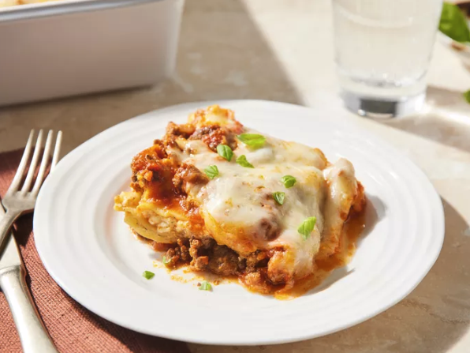

Gather all ingredients and preheat the oven to 350 degrees F (175 degrees C).
Heat a large skillet over medium-high heat. Cook and stir ground beef in the hot
skillet until browned and crumbly, 8 to 10 minutes. Drain and discard grease.
Stir in spaghetti sauce and simmer for 5 minutes.
Combine cottage cheese, 2 cups of mozzarella cheese, eggs, 1/2 of the grated
Parmesan cheese, dried parsley, salt, and pepper in a large bowl.
Spread 3/4 cup of sauce in a 9x13-inch baking dish. Cover with 3 uncooked
lasagna noodles, 1 3/4 cups of cheese mixture, and 1/4 cup sauce; repeat layers
once more. Top with remaining 3 noodles, sauce, mozzarella, and Parmesan
cheese. Pour 1/2 cup water along the edges of the dish. Cover tightly with
aluminum foil.
Bake in the preheated oven for 45 minutes. Uncover and bake for an additional
10 minutes. Let stand 10 minutes before serving.
Serve and enjoy!